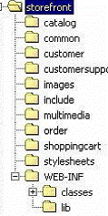
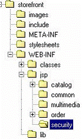

为了更好地保护你的JSP避免未经授权的访问和窥视，一个好办法是将页面文件存放在Web应用的WEB-INF目录下。通常JSP开发人员会把他们的页面文件存放在Web应用相应的子目录下。一个典型的商店应用程序的目录结构如下图所示。跟catalog （商品目录）相关的JSP被保存在catalog子目录下。跟customer相关的JSP，跟订单相关的JSP等都按照这种方法存放。

基于不同的功能JSP 被放置在不同的目录下这种方法的问题是这些页面文件容易被偷看到源代码，或被直接调用。某些场合下这可能不是个大问题，可是在特定情形中却可能构成安全隐患。用户可以绕过Struts的controller直接调用JSP同样也是个问题。为了减少风险，可以把这些页面文件移到WEB-INF 目录下。基于Servlet的声明，WEB-INF不作为Web应用的公共文档树的一部分。因此，WEB-INF 目录下的资源不是为客户直接服务的。我们仍然可以使用WEB-INF目录下的JSP页面来提供视图给客户，客户却不能直接请求访问JSP。采用前面的例子，如下图显示将JSP页面移到WEB-INF 目录下后的目录结构

JSP存放在WEB-INF 目录下更为安全如果把这些JSP页面文件移到WEB-INF 目录下，在调用页面的时候就必须把"WEB-INF"添加到URL中。例如，在一个Struts配置文件中为一个logoff action写一个Action mapping。其中JSP的路径必须以"WEB-INF"开头。如下所示：请注意粗体部分.这个方法在任何情况下都不失为Struts实践中的一个好方法。是唯一要注意的技巧是你必须把JSP和一个Struts action联系起来。即使该Action只是一个很基本的很简单JSP，也总是要调用一个Action，再由它调用JSP。
最后要说明的是，并不是所有的容器都能支持这个特性。WebLogic早期的版本不能解释Servlet声明，因此无法提供支持，据报道在新版本中已经改进了。总之使用之前先检查一下你的Servlet容器。